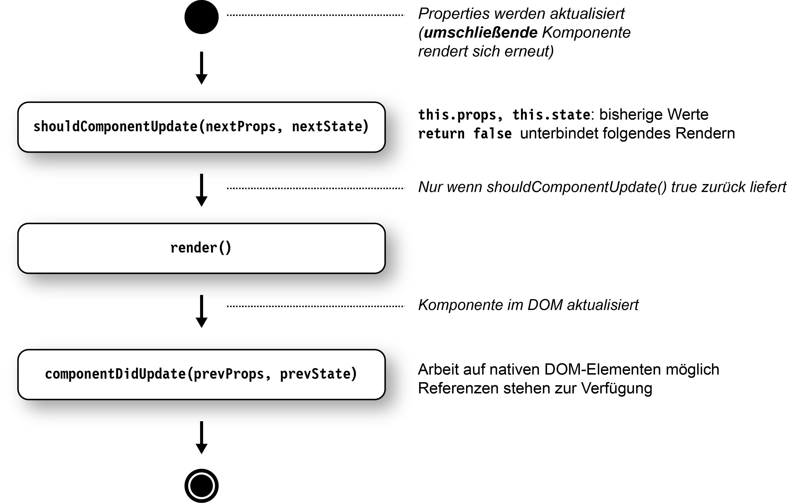
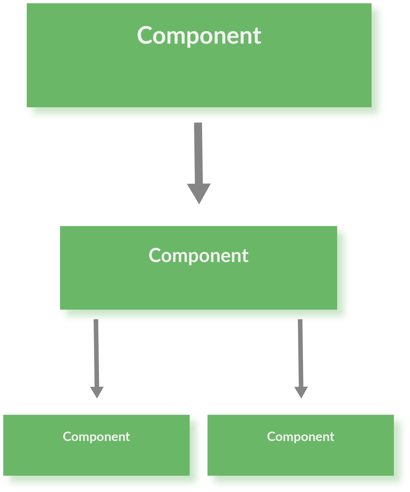
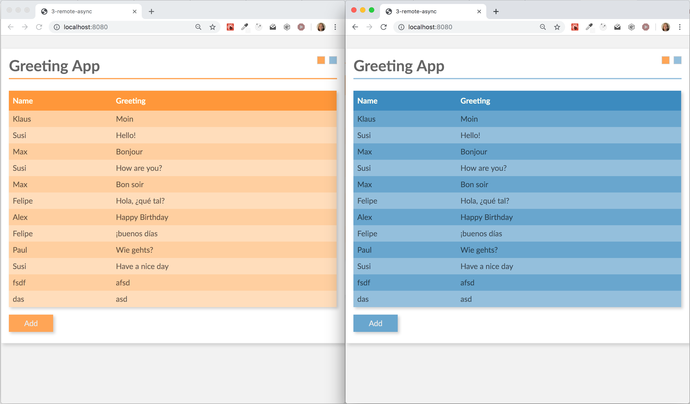
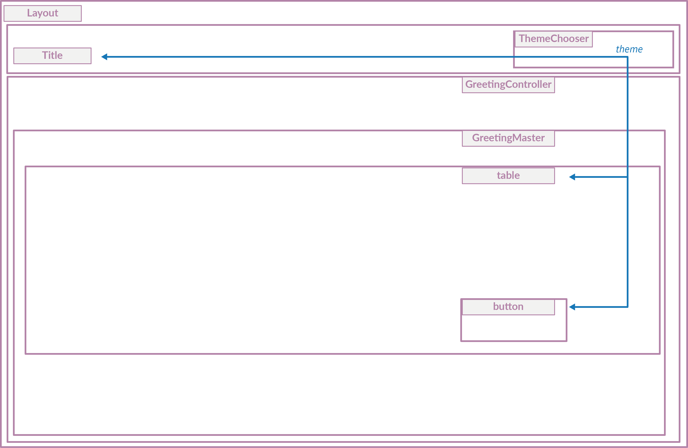

**INSTALLATION**
-
-
`git clone https://github.com/reactbuch/react-workshop.git`
oder
`git pull`
- Im geklonten Verzeichnis:
`npm install`
**STARTEN**
-
- Server 1: Im geklonten Root-Verzeichnis:
`npm run start-backend`
- Server 2: in neuem Terminal: `code/workspace`:
`npm start`
- Browser öffnen:
http://localhost:8080
- Wenn dort ein Hello-World-Text erscheint ist alles gut
Folien: Im geklonten Verzeichnis
`2019_react_2tage.html`
oder: https://reactbuch.github.io/react-workshop/2019_react_2tage.html
**Einführung in React**
Nils Hartmann / @nilshartmann / E-Mail: nils@nilshartmann.net
Inhalt
-
-
Teil 0: React Überblick und Build-Prozess
-
Teil I: React-Komponenten (Grundlagen)
-
Teil II: React-Komponenten: Details, Hierarchien und Anwendungen
-
Teil III: Daten lesen und schreiben vom Server
-
Teil IV: Testen von React Anwendungen
-
Ausblick/Diskussion
-
- Architekturpattern: Flux / Redux
- Context API
- Client-seitiges Routing mit React Router
- React Hooks API
- React Anwendungen mit TypeScript entwickeln
- Einbinden von 3rd-Party-Libs
**Jederzeit:** Fragen und Diskussionen!
Beispiel-Anwendung

Teil 0
React-Einführung und Build-Prozess
React
-
- f Framework von und für Facebook
- f Eingesetzt u.a. von Microsoft, Paypal, Spotify uvm
- f Minimales API
- f Minimales Feature Set
-
- Ihr könnt/müsst viele Entscheidungen selber treffen
React
_ist sehr stabil_
-
- f Semantische Versionierung
- f API Änderungen meist abwärtskompatibel
HSV-Trainer-Vergleich

Unser Beispiel in Komponenten

-
- f bestehen aus
**Logik und UI**
- f
**keine Templatesprache**
- f werden
**deklarativ** beschrieben
- f werden immer
**komplett gerendert** (kein 2-Wege-Data-Binding)
- f werden zu
**ganzen Anwendungen** aggregiert
-
- Werden als ES6 Klasse (oder Funktion) implementiert
- Keine Templatesprache (stattdessen JavaScript)
- Templates können HTML-artige Syntax enthalten (JSX)
-
- Beispiel Schritt-für-Schritt (`code/workspace-live-coding`)
import React from "react";
export default class HelloMessage extends React.Component {
constructor(props) {
super(props);
this.state = {greeting: props.initialGreeting};
}
render() {
return (
<div>
<input
value={this.state.greeting}
onChange=
{event => this.setState({greeting: event.target.value})}
/>
<p>{this.state.greeting}, World</p>
</div>
);
}
}``index.html`
<html>
<body>
</body>
<script src="dist/main.js"></script>
</html>
``main.js`
import React from 'react';
import ReactDOM from 'react-dom';
import HelloMessage from './HelloMessage';
const mountNode = document.getElementById('mount');
ReactDOM.render(<HelloMessage initialGreeting="Hello"/>, mountNode);
`ES6 Features
class Person {
constructor(name) {
this._name = name;
}
getName() {
return this._name;
}
}
class Programmer extends Person {
constructor(name, language) {
super(name);
this.language = language;
}
code() {
return `${this.getName()} codes in ${this.language}`;
}
}`const programmer = new Programmer('Erna', 'JavaScript');
console.log(programmer.code());
console.log(programmer instanceof Programmer); // true
console.log(programmer instanceof Person); // true`ES6: Module, Importe und Exporte
// Person.js
class Person {
// ...
}
export default Person;
`// Person.js
// in einer Zeile zusammengefasst
export default class Person {
// ...
}
`// Programmer.js
import Person from './Person';
export default class Programmer extends Person {
// ...
}
`// util.js
export function displayInPage(text) {
document.body.innerHTML +=
`${text}
` ;
}
export showInfo = msg => window.alert(`Wichtige Info: ${msg}`);
// or
function displayInPage(text) { . . . }
const showInfo = ...;
// specify exports
export { displayInPage, showInfo };
`import {displayInPage} from "./util";
displayInPage('Hello, World');
`const displayInPage = (text) => {
return document.body.innerHTML +=
`${text}
`;
};`// Klammern können weggelassen werden, genau ein Parameter
// ebenso die geschweiften Klassen, wenn nur ein Statement:
const displayInPage = text => document.body.innerHTML += `${text}
`;
`Template Strings werden in Backticks (``) geschrieben und können Ausdrücke (in `${}`) enthalten:
const name = "Susi";
const greeting = `Hello, ${name}`; // Hello, Susi
const four = `Two and two is: ${2+2}` // Two and two is: 4
const time = `The time is: ${new Date()}`); // The time is: ...
`Hintergrund
Buildprozess
Buildprozess
-
- ES6ff- und JSX-Code muss nach ECMAScript 5 übersetzt werden
-
- Status der ES6 Implementierungen der Browser:
https://kangax.github.io/compat-table/es6/
-
- Babel oder TypeScript (Compiler)
- Webpack (Bundler)
- Webpack Dev Sever (HTTP Server mit Hot Reload)
Webpack und Babel

Webpack Development Server
-
- Zum Ausführen der Anwendung wird ein Webserver benötigt
- f Für die Entwicklung
**Webpack Dev Server**:
-
- ...führt Webpack auf Basis der Projekt Webpack Konfiguration aus
- ...erzeugt Ausgabe in Memory (Performance)
- ...Hot Reloading: Automatische Aktualisierung nach Code Änderung
React Devtools
_React Developer Tools für Chrome und Firefox_Untersuchen der React Anwendung zur Laufzeit

Workspace
-
-
`2019_react_2tage.html` Slides im Root-Verzeichnis
-
`code/workspace`: Verzeichnis für Eure Übungen
-
`code/material`: Code als Ausgangspunkt für Übungen
-
`code/schritte`: Fertige Stände nach den einzelnen Teilen
Starten
-
- Im
**Root-Verzeichnis (falls noch nicht geschehen)**:
`npm start`, um den REST-Server zustarten (einmal starten, dann einfach durchlaufen
lassen)
- In
**code/workspace**:
`npm start`, um Webpack DevServer zu starten. Kann durchlaufen, aber falls Reloading nicht klappt, neu
starten
Übung 1: React Hello-World
### _Mach dich mit den Werkzeugen vertraut und schreib deine erste React-Komponente_-
-
`cd code/workspace`
-
`npm start`
- Öffne
http://localhost:8080 im Browser
- Wenn auf der Seite 'Hello, World' steht, ist alles gut
-
- Ersetze die "statische" Komponente (HelloMessage) mit der React-Komponente aus dem vorherigen Beispiel
aus den
Folien ("Hello World React")
-
_Zusatzaufgabe: Experimentiere mit der Anwendung, mache einige Änderungen, wie z.B._
-
- Alle Eingaben sollen in Großbuchstaben auftauchen
- Gib irgendeine Rückmeldung wenn die Eingabe leer ist
Teil I
React-Komponenten (Grundlagen)
Ziel-AnwendungDokumentation
-
- Rendering
- Properties und Zustand
- Referenzen auf DOM-Elemente (Refs)
-
- Komponentenname entspricht dem Klassennamen
- native Komponenten (button, div, input, ...) beginnen mit Kleinbuchstaben
_Jede React-Komponente braucht eine `render`-Methode:_
-
- wird aufgerufen beim ersten Rendering und wenn sich der Zustand ändert
- kann HTML-artige JSX-Syntax nutzen
- liefert genau
**ein** Element oder
**null** oder
**ein Boolean** oder
**ein Array** oder
**einen String** oder
**ein "Fragment"** zurück
class GreetingDetail extends React.Component {
render() {
return (
<input onChange={event => this.updateModel(event.target.value)}
value={this.state.greeting} />
{this.state.greeting}, World
);
}
// ...
}
`- Wird wie HTML hingeschrieben, inkl Attribute:
<div><input type="text"/></div> ` -
Achtung! `class`-Attribut heißt
`className`:
<h1 className="title">...</h1> ` - Attribute, die keine Strings sind, müssen in {} eingeschlossen
werden:
<Counter label="Count" count={7} showValues={true} /> ` - Kann pures JavaScript enthalten, eingeschlossen in {}:
const title = 'Hello, World'; <h1>{title.toUpperCase()}</h1> ` - CSS-Eigenschaften werden als Objekt übergeben in
Camel-Case-Notation:
const styles = { marginLeft: '10px', border: '1px solid red' }; <h1 style={styles}>...</h1> `
- Zuweisen an Variablen
const counter = <Counter label="..." /> ` - ...als Return-Wert:
function renderCounter(label) { return <Counter label="..." />; } ` - Fragmente (rendern selber kein Element in den DOM, nur ihre
Kind-Elemente):
render() { return <React.Fragment> <li>Yes</li> <li>No</li> </React.Fragment> } ` - null, false oder boolean, um nichts zu rendern:
render() { if (!someCondition) { return null; // oder false oder true } return ...; } `
// ES5:
const firstName = 'Klaus';
const person = {
firstName: firstName
};
console.log(person.firstName); // Klaus
// ES6:
const firstName = 'Klaus';
const person = {
firstName
};
console.log(person.firstName); // Klaus
`const schluessel = 'vorname';
const person = {
[schluessel]: 'Klaus'
};
console.log(person.vorname); // Klaus
let id = 1;
const personen = {
[`id_${id++}`]: 'Klaus',
[`id_${id++}`]: 'Susi'
};
console.log(personen); // Object {id_1: "Klaus", id_2: "Susi"}
`const person = {
fistName: 'Klaus',
lastName: 'Mueller',
age: 42
};`const {firstName, age, notFound} = person;
console.log(firstName); // Klaus
console.log(age); // 42
console.log(notFound); // undefined
`function someFunction({firstName, age, notFound}) {
console.log(firstName); // Klaus
console.log(age); // 42
console.log(notFound); // undefined
}
someFunction(person);
`-
-
**Properties** werden der Komponente von
**außen** übergeben (und nicht verändert)
- f
**Zustand (State)** ist eine
**innere** Eigenschaft der Komponente (die verändert werden kann)
- f Beides sind Objekte mit Key-Value-Paaren
-
- Properties werden über den Konstruktor in die Komponente hineingereicht
- Properties dürfen nicht verändert werden
- Zugriff über
`this.props`
class Header extends React.Component {
constructor(props) {
super(props);
}
render() {
return (
<h1 style={{color: this.props.titleColor}}>{this.props.title}</h1>
);
}
}
`-
- `this.props.children` enthält Kind-Elemente
class NavBar extends React.Component {
render() {
return (
<div className="NavBar">
{this.props.title}
{this.props.children}
</div>
);
}
}
`
<NavBar title="Navigation">
<a href="/home">Home</a>
<a href="/shop">Shop</a>
</NavBar>
`-
- Beispiel: Inhalt eines Eingabefelds, Daten vom Server, Menu offen oder zu
-
**Werte** üblicherweise immutable
- f
**Initialisieren** im Konstruktor mit
`this.state={}`
- f Zustand
**lesen** über
`this.state`
- f Zustand
**setzen** über
`this.setState()`
-
-
**Achtung:** kein "reiner" Setter
- f Führt alten und neuen Zustand zusammen
- f Wird asynchron ausgeführt!
- f
**Löst erneutes rendern der
gesamten Komponente aus**
useState Gotchas
- Asynchroner Zugriff
- Updater Funktion
function GreetingDetail extends React.Component {
constructor(props) {
super(props);
this.state = { name: 'Klaus' };
}
updateModel(event) {
// Zustand ändern: Komponente wird neu gerendert
this.setState({name: event.target.value});
}
render() {
return <input value={this.state.name}
onChange={e => this.updateModel(e)} />
}
// ...
}
`_Es gibt keine automatische Bindung an Modelle (2-Wege Databinding)_
-
- DOM-Events werden in React-Events verpackt
- React-Events haben weitgehend selbe API wie DOM-Events
- Besonderes Event:
**onChange**
-
- onChange ist auf
`input`,
`textarea`,
`select` definiert und verhält sich Komponenten- und Browser-übergreifend einheitlich
class GreetingDetail extends React.Component {
render() {
return (
<input onChange={event => . . .} />
);
}
// ...
}
`
"Rendern" hat leider doppelte Bedeutung!

-
- `React.createRef() ` erzeugt ein allgemeines Referenz-Objekt
- Das Objekt wird in der Komponente gespeichert (i.d.R. als Instanz-Variable)
- Eine Komponente wird der Referenz zugewiesen
- Über `current`-Property am Referenz-Objekt erhält man Zugriff auf das native DOM-Element
class HelloMessage extends React.Component {
constructor(props) {
super(props);
this.inputRef = React.createRef();
}
render() {
return
<input ref={this.inputRef}
onChange={...} value={...}/>
<button onClick={() => this.reset()}>Clear</button>
;
}
reset() {
this.setState({greeting: ""});
// focus() ist Funktion auf nativem DOM Element
this.inputRef.current.focus();
}
}
`-
- Alternativ: Elementen kann eine Callback-Funktion
`refs` übergeben werden
- f Funktion wird nach dem Rendern mit Referenz auf DOM Element aufgerufen (oder
`null`)
- f Diese Referenz kann man z.B. als Member-Variable speichern
class HelloMessage extends React.Component {
render() {
return (
<input ref={inputElement => this.inputElement = inputElement}
onChange={...} value={...}
/>
<button
onClick={() => this.reset()}>
Clear
</button>
);
}
reset() {
this.setState({greeting: ""});
// focus() ist Funktion auf nativem DOM Element
this.inputElement.focus();
}
}
`-
- f
**Properties**: Konfiguration von außen übergeben. Unveränderlich innerhalb der Komponente
- f
**State:
** Interner und veränderlicher Zustand der Komponente. State-Änderung führt zu re-rendering
- f
**Instanz-Variablen**: Nicht render-relevante Informationen, zB Referenzen auf DOM-Elemente, Callbacks
zum Beenden
von Timern
Übung 2: Detail-Ansicht für unsere Gruß-Anwendung
### Erzeuge eine Komponente mit der man einen Namen und eine Grußformel eingeben kannErweitere deine erste React-Komponente im workspace-Ordner
-
- benenne deine HelloMessage-Komponente (und das HelloMessage-Modul) in
`GreetingDetail` um
- du brauchst zwei Eingabefelder, die
`name` und
`greeting` im Zustand der Komponente setzen
- Erweitere deine Komponente so, dass man von außen Properties übergeben kann, die den Zustand
initialisieren
- Füge einen "Clear"-Button hinzu, der den Inhalt beider Eingabefelder löscht. Das entsprechende
Event auf dem Button heißt `onClick`
Teil II
React-Komponenten: Details, Hierarchien und Anwendungen
Ziel-Anwendung-
- Komponenten als Funktionen
- Darstellung von Listen
- Architektur-Idee: Controller-Komponente und View-Komponente
- Durchreichen von Zustand und Callbacks
-
- Alternative zu Klassen
- Komponente ist eine einfache Funktion
- entspricht der
`render`-Methode einer
`React.Component`
- Properties werden per Parameter übergeben (als Objekt)
- Zurzeit nur ohne Zustand und ohne Lifecycle-Methoden
import React from 'react';
export default function Greet(props) {
return (
{props.greeting}
{props.name}
);
}
// Verwendung:
<Greet name="Susi" greeting="Hello" />
`
JSX bietet nichts für Listen
Ausgabe typischerweise über `Array.map()`
Elemente einer Liste brauchen einen eindeutigen Key
const greetings = [
{ id: 0, name: 'Olli', greeting: 'Huhu' },
{ id: 1, name: 'Oma', greeting: 'Hallo' }
];
const MyTable(props) => (
<table>
{props.greetings.map(greeting =>
<tr key={greeting.id}>
<td>{greeting.name}</td>
<td>{greeting.greeting}</td>
</tr>
)}
</table>
);
`-
- Arrays können in
`render` zurückgegeben werden (anstatt
**eines** Root Elements)
- Elemente brauchen trotzdem einen eindeutigen Key
// Beispiel: statische Elemente
function Choices(props) {
return [
<td key="yes">Yes</td>,
<td key="no">No</td>
]
}
`
// Beispiel: dynamisches Array
function GreetingRows(props) {
// map liefert ein Array zurück!
return props.greetings.map(greeting =>
<tr key={greeting.id}>
<td>{greeting.name}</td>
<td>{greeting.greeting}</td>
</tr>
;
)
`-
- f Eine React-Komponente liefert immer genau
**ein** (Top-Level)-Element zurück
- f Ein Fragment ist ein Top-Level-Element, für das kein DOM-Element erzeugt wird
// geht nicht:
function Choices(props) {
<td key="yes">Yes</td>
<td key="no">No</td>
}
// geht:
function Choices(props) {
return <React.Fragment>
<td key="yes">Yes</td>
<td key="no">No</td>
</React.Fragment>
}
`Anwendungen und Komponentenhierarchien
#1: Welche Komponente soll angezeigt werden (Master oder Detail?)

#2: Wo wird der State (Greetings) verwaltet?

Welche Komponente soll angezeigt werden?
Master oder Detail?
Schritt-für-Schritt in `code/workspace-live-coding`
Verwaltet den Zustand (u.a. welche Komponente sichtbar ist)

Rendering der Children
class GreetingController extends React.Component {
constructor() {
this.state = { mode: 'MASTER' }
}
render() {
if (this.state.mode === 'MASTER') {
return <GreetingMaster />;
}
return <GreetingDetail />;
}
}
`Wie wird zwischen den Komponenten kommuniziert?
Beispiel: Child-Komponente will Parent Informationen übermitteln
Callback-Funktionen als Properties #1

Kommunikation mit Children: Callback-Funktionen als Properties #2
class GreetingController extends React.Component {
constructor() { . . . }
render() {
if (this.state.mode === 'MASTER') {
return <GreetingMaster
onAdd={() => this.setState({mode: 'DETAIL'}) } />;
}
return <GreetingDetail
onSave={() => this.setState({mode: 'MASTER'}) } />;
}
}
`
class GreetingMaster extends React.Component {
render() {
return (
...
<button onClick={this.props.onAdd}>Add</button>
)
}
}
`Wo wird der State (Greetings) verwaltet?
Wie kommen neue Greetings (GreetingDetail) in die Liste (GreetingMaster)?
Verwaltet den "globalen" State
State wird als Property an Children übergeben

State wird als Property an Children übergeben #2
class GreetingController extends React.Component {
constructor() {
this.state = {
mode: 'MASTER',
greetings: . . .
}
}
render() {
if (this.state.mode === 'MASTER') {
return <GreetingMaster
greetings={this.state.greetings}
onAdd={() => this.setState({mode: 'DETAIL'}) }
/>;
}
. . .
}
}
`
class GreetingMaster extends React.Component {
render() {
const greetings = this.props.greetings;
return (
<table>
{ greetings.map(g => <tr>...</tr>) }
</table>
<button onClick={this.props.onAdd}>Add</button>
)
}
}
`Verwaltet den "globalen" State

Neues Greeting wird per Callback-Funktion zurück gegeben
Neues Greeting wird per Callback-Funktion übergeben #2
class GreetingController extends React.Component {
constructor() { . . . }
render() {
if (this.state.mode === 'MASTER') {
. . .
}
return <GreetingDetail
onSave={(newGreeting) => this.setState({
greetings: [...this.state.greetings, newGreeting],
mode: 'MASTER'})
}
/>;
}
}
`
class GreetingDetail extends React.Component {
render() {
return (
<input name="name" . . . />
<input name="greeting" . . . />
<button onClick={() => this.props.onSave({
name: this.state.name,
greeting: this.state.greeting
})
}>Add</button>
)
}
}
`Beispiel: Unsere Anwendung (Zusammenfassung)

(Alternativ: Container und Presentation Components)

Übung 3: Eine komplette Anwendung zusammen setzen
### Füge deinen bestehenden Detail-View ( `GreetingDetail`) und einen Master-View über eine Controller-Komponente zusammen-
- kopiere das Material aus
`code/material/2-hierarchy` in deinen src-Ordner
(oder dein fertiges
`GreetingDetail` verwenden)
- erweitere im
`GreetingController` die render-Methode, so dass dein
`GreetingDetail` angezeigt wird, wenn der Benutzer den Add-Button klickt:
- **Optional:** Füge dem GreetingDetail einen **neuen** Knopf "Abbrechen" hinzu, mit dem nur der Master wieder angezeigt wird (der eingegebene Gruße wird nicht gespeichert)
-
- dort gibt es bereits einen Kommentar, der dir die richtige Stelle anzeigt und weitere Details enthält
- übergib einen Callback der
`addGreeting` nutzt


Teil III
Daten lesen und schreiben vom Server
Ziel-Anwendung-
- Wie machen wir das Laden und Speichern technisch?
- Wo steht der Code zum initialen Laden der Grüße? (beim Start der Anwendung)
- Wo speichern wir?
- Wie funktioniert asynchrone Verarbeitung in React?
-
- React macht keine Angabe, wie Server-Calls (technisch) gemacht werden
- Häufig in React verwendet:
**fetch** API
-
- Browser-API zum Ausführen von HTTP Requests
-
hohe Verbreitung
- Spezifikation:
https://fetch.spec.whatwg.org/
- Polyfill:
https://github.com/github/fetch
Daten lesen per GET
// Für GET Zugriff reicht es, die URL anzugeben:
try {
const response = await fetch('http://localhost:7000/api/greetings')
const json = await response.json();
// ...
} (catch ex) {
console.error('request failed', ex)
}
`
// Alternative mit Promise:
fetch('http://localhost:7000/api/greetings')
.then(response => response.json())
.then(json => /* ... */)
.catch(ex => console.error('request failed', ex));
`Daten lesen per POST
`fetch` erwartet als zweiten Parameter ein Objekt mit Konfigurationsparametern, u.a:
-
-
`method`: gibt die HTTP Methode an (
`PUT`,
`POST`,
`DELETE`, ...)
-
`headers`: Objekt mit HTTP Headern für den Request
-
`body`: Der Request-Payload (als String)
const response = await fetch(url, {
method: 'POST',
headers: {
'Accept': 'application/json',
'Content-Type': 'application/json'
},
body: JSON.stringify(payload)
})
// ...
`ES6: Promises
Wird evtl. erst in der Zukunft eingelöst
const promise = . . .;
`// then returns a new promise
const promise2 = promise.then(value => `${value} plus stuff`);`promise2.then(value => console.log(value));
// Output after 1 second: Result from promise plus stuff
`Allerdings **muss** man etwas tun, um das mitzubekommen: catch()
Promise
// creates and directly resolves promise
.resolve('Result from promise')
.then(x => {
// this will be printed
console.log(x);
})
.then(() => {
console.log('This will be printed');
})
// this will NOT be printed as no error occured
.catch(e => console.log('error: ', e))
// Output:
// Result from promise
// This will be printed`Promise
// creates and directly resolves promise
.resolve('Result from promise')
.then(x => {
// this will be printed
console.log(x);
throw new Error('Something went wrong');
})
.then(() => {
console.log('This will NOT be printed');
})
// this will be printed
.catch(e => console.log('error: ', e))
// Output:
// Result from promise
// error: [Error: Something went wrong]`
try {
// 1. fetch returns a promise, that will be resolved
// with a Response object when response is received
// from server
const response = await fetch('http://localhost:7000/api/greetings');
// 2. the Response object contains a json() function,
// that returns the parsed JSON from the Response body
const json = await response.json();
// 3. with the resolved JSON object we set the
// component state (=> leads to re-rendering)
this.setState({greetings: json});
} catch (ex) {
// 4. in case something goes wrong (during request,
// request processing or rendering)
console.error('request failed', ex);
// as an alternative we could set and render an error msg:
this.setState({error: ex})
}
`async / await
Erlauben es, asynchronen Code "linear" hinzuschreiben
-
- Seit ECMASCript 2017 Standard
- Babel und TypeScript können nach ES5 compilieren
- Promise Polyfill für ältere Browser verwenden
-
- f
`async` definiert "async functions"
- f
`async` functions liefern
**immer** ein Promise zurück:
async function greet(name) {
return `Hello, ${name}`;
}
const greeting = greet('Klaus');
// greeting ist ein Promise!
console.log(greeting instanceof Promise); // => true
console.log(greeting) // => Promise {<resolved>: "Hello, Klaus"}
`
const greet = async (name) => `Hello, ${name}`;
const greeting = greet('Klaus');
// greeting ist ein Promise!
console.log(greeting instanceof Promise); // => true
console.log(greeting) // => Promise {<resolved>: "Hello, Klaus"}
``await` wartet auf erfüllte Promises
async function greet(name) {
return `Hello, ${name}`;
}
// oder:
function greet(name) { return new Promise(...); }
async function sayWhat(name) {
const greeting = await greet(name);
// ...Achtung! Hier zwischen kann Zeit vergehen...
// greeting ist ein String!
console.log(greeting); // => Hello, ...
}
`Statt `then` bzw `catch` werden mehrere `await` Statements bzw Exception Handling verwendet:
// Liefert ein Promise zurück
async function loadUser(username) { . . . };
async function loadProfileDate(userId) { . . .};
async function loadData() {
try {
const user = await loadUser('klaus');
const profile = await loadProfileData(user.userId);
} catch (e) {
console.error("Something failed")
}
}
`Komponenten können optionale Lifecycle-Methoden haben

`componentDidMount` wird aufgerufen, wenn Komponente ins DOM gerendert wurde
Hier werden Daten üblicherweise initial geladen:
class GreetingController extends React.Component {
constructor(props) {
// intial state (empty now)
this.state = { greetings: [] };
}
// 'async' wegen 'await' notwendig (sonst ohne 'async' hinschreiben)
async componentDidMount() {
try {
const response = await fetch('/api/greetings');
const json = await response.json();
this.setState({ greetings: json});
} catch (error) { . . .}
}
}
`_Empfehlung:_ Zugriffe auf Server in externes Modul auslagern (besser test- bzw mockbar)
Aufgabe: Daten sollen abhängig von Properties geladen werden
Beispiel: einzelnes Greeting per greetingId)
Problem: wir müssen auf Veränderung der Properties reagieren
`componentDidMount` und `componentDidUpdate` müssen implementiert werden
class GreetingController extends React.Component {
constructor(props) { . . . }
async componentDidMount() {
const response = await fetch(`/api/greetings/${this.props.greetingId}`);
. . .
}
async componentDidUpdate(prevProps) {
if (prevProps.greetingId !== this.props.greetingId) {
const response = await fetch(`/api/greetings/${this.props.greetingId}`);
...
}
}
}
`Zum Beispiel als Folge einer Benutzerinteraktion:
class GreetingController extends React.Component {
render() {
...
<GreetingDetail onSave={greeting => this.saveGreeting(greeting)} />
...
}
async saveGreeting(greetingToBeSaved) {
try {
const response = await fetch('/api/greetings', {
method: 'POST',
headers: ...,
body: JSON.stringify(greetingToBeSaved)
});
const newGreeting = response.json();
// Neuen Gruss an bestehende Liste anfuegen und State neu setzen
const newGreetings = [ ...this.state.greetings, newGreeting ];
this.setState({greetings: newGreetings});
} catch (err) { . . . }
}
}
`Übung: Laden und Speichern der Daten von/auf einem Server
_Entwickle auf Basis von fetch eine Version des GreetingControllers, der die Daten auf dem Server laden und dort wieder speichern kann_
Der Server ist bereits vorgegeben und kann mit `npm run start-backend` im Root-Verzeichnis gestartet werden. Er ist dann unter Port 7000 erreichbar
-
- Kopiere
`code/material/3-remote/GreetingController.js` in deinen Arbeitsbereich
- Die Serverzugriffe sollen in
`loadGreetings` und
`saveGreeting` erfolgen
- Dort sind bereits entsprechende TODOs für dich eingetragen
- Die URL des Backends steht in der Konstante `BACKEND_URL`.
Teil IV
Testen von React Anwendungen
Was testen wir überhaupt?
-
- f
**UI-unabhängige Logik** (z.B. Services, Backend-Calls)
- f
**Rendern** (wird meine Greeting-Liste für ein Satz von Greetings korrekt dargestellt)
- f
**Interaktionen** (funktionieren meine Event-Listener korrekt)
- f
**Verhalten im Browser** (z.B. korrekte Darstellung, Browser-spezifisches JavaScript, Arbeiten mit
history, Titelzeile,
Scrollbars etc)
Was testen wir überhaupt?
- **UI-unabhängige Logik** - **Rendern** (wird meine Greeting-Liste für ein Satz von Greetings korrekt dargestellt) - **Interaktionen** (funktionieren meine Event-Listener korrekt)
- **Verhalten im Browser** (z.B. korrekte Darstellung, Browser-spezifisches JavaScript, Arbeiten mit history, Titelzeile, Scrollbars etc)
Anforderungen
-
- f Komponenten müssen im Test gerendert werden können
-
- Beispiel: CSS-Klasse korrekt gesetzt, 'value' korrekt gesetzt
-
- Events müssen getriggert oder simuliert werden können
Jest
_"Delightful JavaScript Testing" ( http://facebook.github.io/jest/)_
Vollständige Test-Lösung, wird von Facebook für Testen von React verwendet:
-
- Test Runner
- Specs, Assertions, Mocks
- Code Coverage
- "Snapshot testing"
// sum.js (oder sum.ts)
export const sum = (a,b) => a+b;
`// sum.test.js
import {sum} from '../sum.js';
test('sum of 2 and 2 is 4', () => {
expect(sum(2, 2)).toBe(4);
});
test('sum of 2 and 2 is not 3', () => {
expect(sum(2, 2)).not.toBe(3);
});
`Testcases
`test` oder `it`
test('it should work', () => {
expect(...).toBe(...);
});`it('it should also work', () => {
expect(...).toBe(...);
});`Testsuites
-
- Testsuites (optional, müssen nicht verwendet werden)
describe('some feature', () => {
test('test 1', () => {...});
test('test 2', () => {...});
test('test 3', () => {...});
});`describe.only('some feature', () => { } );
describe.skip('another feature', () => { });
test.only('should work', () => { });
test.skip('does not work, skip for now', () => { });
`Expectations und Matcher
`expect()` liefert eine _Expectation_ zurück, auf der _Matcher_ definiert sind:
expect(actual).toXyz(expected);
// for example:
expect("Hello Jest").toBe("Hello Jest"); // => ok
`Einige Matcher
// Vergleich auf Identität
expect(actual).toBe(expected);
// Inhaltsvergleich:
expect(actual).toEqual(expected);
// true / false / null:
expect(actual).toBeTruthy();
expect(actual).toBeFalsy();
expect(actual).toBeNull();
// Länge (Array oder String)
expect(actual).toHaveLength(123);
`Mock Funktionen (in Jest)
-
- f `jest.fn()` erzeugt eine Mock-Funktion
// Liefert undefined zurück, wenn ausgeführt
const aMockFn = jest.fn();
aMockFn(); // => undefined
`
const aMockFn = jest.fn( param => `Hello, ${param}` );
console.log(aMockFn('World'));
// => Hello, World
`Mock Funktionen
- f Aufrufe sicherstellen
const aMockFn = jest.fn( param => `Hello, ${param}` );
// use aMockFn somewhere in your code, then assert:
expect(aMockFn).toHaveBeenCalled();
expect(aMockFn).toHaveBeenCalledWith('World');
`
const mockFn = jest.fn();
mockFn('Hello', 'World');
expect(mockFn.mock.calls).toHaveLength(1);
expect(mockFn.mock.calls[0].toBe(['Hello', 'World']);
`
const mockFn = jest.fn();
mockFn('Hello', 'World');
expect(mockFn.mock.calls).toHaveLength(1);
jest.restAllMocks(); // or: mockFn.mockReset();
expect(mockFn.mock.calls).toHaveLength(0);
`Mock modules
- f Ein Modul mocken:
// external module:
jest.mock('react-dom');
// internal module:
jest.mock('../../app/myDataService');
// alle Funktionen sind jetzt gemockt,
// "leere" Implementierung, return undefined)
`
jest.mock('../../app/myDataService', () => ({
loadData: jest.fn( () => ({data: 'mock data'}) );
});
console.log(myDataService.loadData());
// => {data: 'mock data'}
`Mock modules
- f Funktionen aus gemockten Modulen sind Jest Mock Funktionen
import myDataService from '../../app/myDataService';
jest.mock('../../app/myDataService');
// do something in code, that uses my dataservice
expect(myDataService).toHaveBeenCalled();
`Rendering
https://www.npmjs.com/package/react-test-renderer
Rendert React Komponenten in JSON Objekte (ohne DOM):
import renderer from 'react-test-renderer';
const component = renderer.create(
<GreetingMaster greetings={someGreetings} />
);
console.log(component.toJSON());
`
{ type: 'div',
props: {},
children: [
{ type: 'table', props: {}, children: [Object] },
{ type: 'button', props: [Object], children: [Object] }
]
}
``expect(obj).toMatchSnapshot()` vergleicht ein JSON-Objekt mit einer gespeicherten Datei:
-
- f Bei
**erster** Ausführung: legt Snapshot-File an (
Beispiel)
-
- f Snapshotdateien werden in Git versioniert
-
- Fehler samt Diff (
Beispiel)
- Im Watch Mode kann Snapshot aktualisiert werden

import renderer from 'react-test-renderer';
test('it should render correctly', () => {
const someGreetings = [ . . . ];
const component = renderer.create(
<GreetingMaster greetings={someGreetings} />
);
expect(component.toJSON()).toMatchSnapshot();
});
`_Snapshot sagt nicht, ob UI richtig oder falsch gerendert wird, sondern nur, ob sie verändert wurde!_
Interaktion
_JavaScript Testing utilities for React ( http://airbnb.io/enzyme/)_
Bibliothek mit Funktionen zum Testen von React Komponenten
-
- f Rendern von Komponenten:
-
-
**shallow** zum "flachen" Rendern einer Komponente
-
**mount** zum Rendern einer Komponete in einen (headless) DOM, z.B. jsdom
import {mount} from 'enzyme';
import GreetingController from '...';
import GreetingDetail from '...';
test('it should open detail view on button click', () => {
// mount the component into a real dom (implemented by JSDom)
const component = mount(<GreetingController />);
// on initial render the list with greetings (GreetingMaster)
// is visible but no GreetingDetail
expect(component.find(GreetingDetail)).toHaveLength(0);
// find the "add" Button...
const addButton = component.find('button');
// click on the button
addButton.simulate('click');
// now the GreetingDetail should be visible
expect(component.find(GreetingDetail)).toHaveLength(1);
});
`Übung: React Komponente mit Jest und Enzyme testen
_Vervollständige Testfälle für die GreetingMaster Komponente_
-
- Kopiere
`code/material/4-test/test`
nach `code/workspace`
Aus- und Überblick
### Weiterführende ThemenZustands-Management mit Redux
Eine typische React-Anwendung in Komponenten
### Frage an Euch: was könnte es für Probleme geben? Wo muss ich nach Fehlern suchen? Wo ist die Logik?

Geht entweder nicht oder "Gott-Komponente" entsteht

Wie kommt Zustand von ganz oben nach ganz unten?

Wiederverwendung? React-unabhängigkeit? Testbarkeit?
Habt ihr Ideen?
Wie können wir Zustand und/oder Logik aus den Komponenten befreien?
Redux
### External StatemanagementRender Cycle in Pure React

Redux extrahiert die Verantwortlichkeiten

Demo: Redux & Redux Devtools
Ziel-Anwendung(npm start in code/schritte/redux/7-redux-complete-app)
Redux Schritt-für-Schritt
Wir stellen eine Komponente auf Redux um
(Verzeichnis: `workspace-redux`)
Strukturierter Überblick über alle Redux Teile
export const setFilter = filter => {
return {
type: SET_FILTER,
filter
};
}
`-
- f Action-Creators erzeugen Action-Objekte
- f Actions sind Kommando-artige Strukturen von Dingen, die die Applikation tun soll
- f Über die dispatch-Methode des Stores werden sie an _alle_ Reducer weiter gegeben
- f Actions bestehen aus einem Typen und einer beliebigen Nutzlast (payload)
export const loadGreeting = greetingId => dispatch => {
fetch(BACKEND_URL+'/'+greetingId)
.then(response => response.json())
.then(greetings => dispatch({
type: SET_GREETINGS,
greetings
});
};
`-
- f Die Action wird nicht direkt zurück geliefert, sondern erst später dispatched
- f wir bekommen die dispatch Methode als Parameter, mit der wir später
die Action dispatchen
Action-Creators sind die einzigen Teile einer Redux-Anwendung, die asynchrone Operationen ausführen dürfen
import { Provider } from 'react-redux';
import { createStore } from 'redux';
import { rootReducer } from './reducers';
// http://redux.js.org/docs/api/createStore.html
const store = createStore(
rootReducer // reducer
);
ReactDOM.render(
<Provider store={store}>
<GreetingController />
</Provider>,
mountNode
);
`-
- f Zentraler Teil der Anwendung
- f Liefert die bereits bekannte dispatch-Methode
- f Der Store wird allen Componenten über die Wrapper-Komponenten _Provider_
zur Verfügung gestellt
import { applyMiddleware } from 'redux';
import thunk from 'redux-thunk';
const store = createStore(
rootReducer, // reducer
applyMiddleware(thunk) // middleware as enhancer
);
`-
- f Die Thunk Middleware dient als de-facto-Standard
- f Gibt die dispatch-Methode and (asynchrone) Action Creators weiter
- f
'A thunk is a function that wraps an expression to delay its evaluation'
- f Middleware ist ein fortgeschrittenes Feature und meistens genügt die Thunk Middleware
import {combineReducers} from 'redux';
// http://redux.js.org/docs/api/combineReducers.html
export const rootReducer = combineReducers({
greetings, // updates greeting partial state
filter,
mode
});
`-
- f Reducer sind pure Funtionen, die den alten Zustand und eine Action bekommen und einen neuen Zustand erzeugen
- f Oft bearbeitet ein Reducer nur einen Teil des Zustands
const mode = (state = MODE_MASTER, action) => {
switch (action.type) {
case SET_MODE:
return action.mode;
default:
return state;
}
};
`-
- f Initialisiert seinen Teilzustand (oft mit einem Default-Parameter)
- f Ändert niemals zustand direkt
- f Sondern liefert einen neuen Zustand (manchmal teilweise als Kopie)
import { connect } from 'react-redux';
import * as actions from './actions';
export default connect(
state => ({
mode: state.mode
// ...
}),
actions
)(GreetingController);
`-
- f der Provider gibt den Store in alle Komponenten
- f Die Connect-Funktion extrahiert daraus Zustand, der als Property an Komponenten übergeben wird
- f Action-Creators können ebenso in Komponent gegeben werden
class GreetingController extends React.Component {
render() {
// state from store
const {aggregatedGreetings, greetings, mode} = this.props;
// action creators bound to dispatch from store
const {setMode, saveGreeting, setFilter} = this.props;
// ...
}
}
`-
- f Action-Creators und Zustand werden in Properties hinein gemerged
- f Diese werden mit ES6-Destructuring an den Stellen aufgelöst wo wir sie brauchen
- f Die Komponenten wird nur neu gerendert wenn sich der benutzte Zustand verändert
Zusammenfassung Redux-Architektur

Es gibt unterschiedliche Arten von "State"

Context API
Ziel-AnwendungProblem
### Zentrale Daten, die an vielen Stellen benötigt werden Ansatz 1: Properties durchreichen

Ansatz 2: React Context
Context...
_erlaubt das Durchreichen von Informationen ohne explizites angeben als Properties_
-
- f funktioniert nur innerhalb einer Hierarchie-Ebene
- f es können beliebg viele (fachliche) Context definiert werden
- f besteht aus `Provider` und `Consumer`
- f Doku
Context Factory
_erzeugt ein Objekt, mit **zwei Komponenten**_
-
- f `Provider`, stellt Objekt mit Key-Value-Paaren zur Verfügung (der Context-"Value")
- f `Consumer` wird in eigener Komponente verwendet, um auf einen Context zuzugreifen
import react from "React" from "react-router-dom";
const ThemeContext = React.createContext();
// erzeugt:
// ThemeContext.Provider
// ThemeContext.Consumer
`Context Provider
_Eine React-Komponente, die einen Context zur Verfüng stellt_
-
- f wird innerhalb einer eigenen Komponente in `render` eingebunden
- f Nimmt ein Objekt ("Context") mit beliebigen Werten entgegen
const ThemeContext = React.createContext();
class ThemeProvider extends React.Component {
render() {
const contextValue = {
// the current theme
theme: this.state.theme,
// function to set new theme
setTheme: name => this.setState({theme: name})
};
return <ThemeContext.Provider value={contextValue}>
{this.props.children}
</ThemeContext.Provider>;
}
}
`Context Consumer
_Eine React-Componente, die einen bestimmt Context konsumiert_
-
- f Mit "`static contextType = ...`"" kann ein bestimmter Context referenziert werden
- f Context-Objekt steht dann über `this.context` zur Verfügung
- f Komponente wird neu gerendert, wenn Context sich ändert
import ThemeContext from "...";
class GreetingDetail extends React.Component {
static contextType = ThemeContext;
render() {
// this.context ist Objekt aus dem ThemeContext.Provider
// z.B.:
return <div className={this.context.theme}>...</div>
}
}
`Mehrere Context Consumer
Als Render-Property
-
- f Die `MyContext.Consumer`-Komponente kann direkt verwendet werden
- f Als Children wird dort JSX-Element, sondern eine **Callback-Funktion** übergeben
- f Die Funktion erthält als Parameter das Context Objekt
- f Die Funktion verwendet den Context und liefert JSX zurück
- f Mehrere Consumer können verschachtelt werden
import ThemeContext from "...";
function GreetingMaster(props) {
return <ThemeContext.Consumer>
{ themeContext => {
return <div className={themeContext.theme}>...</div>
}}
</ThemeContext.Consumer>;
}
`Client-seitiges Routing (Überblick)
Ziel-AnwendungWarum Routing?
Mappen von URLs auf Komponenten
(Navigation findet ohne Server-Roundtrip statt)
Komponenten halten (Teil) des Zustandes der Anwendung
Welche Komponente ist sichtbar (Master oder Detail)?
Welche Daten werden dafür geladen (z.B. Greeting Id)
Herausforderungen
Auf Änderungen der URL reagieren
Ableiten des Zustandes aus der URL
Wenn sich die URL ändert, kein Server roundtrip
Hierarchische Komponentenstrukturen
Beim Klick auf Links etc aktualisieren der URL
React Router
-
- Kein Bestandteil von React
- Sehr häufig verwendet (de-facto Standard)
- Aktuelle Version 4:
https://reacttraining.com/react-router/
Top-Level-Objekt, das einmalig (oben) in der Komponenten Hierarchie eingebunden werden muss
Mehrere Ausprägungen zum Arbeiten mit den URL und der Browser History:
-
- f
**HashRouter**: codiert Pfad in angehängten Hash (#/greetings)
- f
**BrowserRouter**: codiert Pfad direkt in URL (/greetings)
import {HashRouter as Router} from "react-router-dom";
const app = <Router><GreetingController/></Router>;
ReactDOM.render(app, document.getElementById(...));
`Das `Route`-Objekt mappt Pfade auf Komponenten
-
- f
Wird verwendet, wo Pfad-abhängig Komponenten ausgewählt werden sollen
-
- vergleichbar mit intelligentem
`if`/
`switch` statement
- Kann überall in der Anwendung** verwendet werden (auf allen Hierarchie-Ebenenen)
import {HashRouter as Router, Route} from "react-router-dom";
const app = <Router>
<Route path="/greet/:greetingId" component={GreetingDisplayController}/>
<Route path="/" component={GreetingController}/>
</Router>;
ReactDOM.render(app, document.getElementById(...));
`-
- Statt einer Komponente kann eine Funktion übergeben werden, die eine Komponente zurückliefert
- Ermöglicht es, zusätzliche Properties an die Komponente zu übergeben
- Kann unterschiedliche Komponenten zurückliefern (z.B. für Authorisierung)
<Route path="/"
render={() => {
return loggedIn ?
<GreetingMaster greetings={initialGreetings} />
:
<LoginForm />
}}
/>
`In Routen werden **Pfade** angegeben, die mit der aktuellen URL verglichen werden**
-
- Pfade sind per Default gültig für Teilstrings
- Mit
`exact` kann das Verhalten verändert werden
- Eine Route ohne
`path` matcht immer
// trifft zu für / und /greeting
<Route path="/" component={GreetingController}/>
// trifft nur zu für /
<Route path="/" exact component={GreetingController}/>
// passt auf jede URL:
<Route component={GreetingController}/>
`-
- f Kann variable Segmente enthalten:
<Route path="/greeting/:greetingId"
component={<GreetingDisplay />} />
// in GreetingDisplay kann die greetingId über
// this.props.match.params.greetingId abgefragt werden
`-
- f Wenn mehrere path-Ausdrücke matchen, werden mehrere Komponenten gerendert (z.B. "/" und "/greetings")
- f
`Switch` sorgt dafür, dass nur die erste Komponente im Block gerendert wird
import {HashRouter as Router, Route, Switch} from "react-router-dom";
const app = (
<Router>
<Switch>
<Route path="/greet/:greetingId" component={GreetingDisplayController}/>
<Route path="/" component={GreetingController}/>
// "No match": ohne Pfad
<Route component={NotFoundPage}/>
</Switch>
</Router>
);
ReactDOM.render(app, document.getElementById(...));
`Der Router übergibt automatisch drei Properties an die gerenderte Komponente:
-
- f
`match`: Enthält u.a. die Parameter aus dem Pfad (
`match.params.xyz`)
- f
`history`: Zum Arbeiten mit der History (z.B.
`push()` zum Navigieren)
- f
`location`: Der aktuelle Pfad (z.B.
`pathname`,
`search`)
const HelloComponent = ({match, history, location}) => (
<div>
<h1>Hello, {match.params.name}</h1>
<small>The current path is: {location.pathname}</small>
<button onClick={() => history.push('/greetings')}>Show Greetings</button>
</div>
);
// ...
<Route path="/greet/:name" component={HelloComponent}/>
`-
- f Die Properties werden auch an die
`render`-Funktion einer
`Route` als Parameter übergeben
<Route path="/somewhere" render={({match, history, location}) => . . . }/>
`Mit `Link` und `NavLink` können Links erzeugt werden
-
- Mit
`to` wird das Ziel angegeben
- Gerendert wird per default ein
`a` Element
- URL wird entsprechend der History (Browser oder Hash) erzeugt
- Mit
`activeClassName` und
`activeStyle` auf
`NavLink` können Styles übergeben werden, die angewendet werden, wenn der Link der aktiven Route entspricht
import {Link, NavLink} from "react-router-dom";
<Link to='/greetings'>Show all greetings</Link>
// Erzeugtes 'a' Element erhält 'highlight' CSS-Klasse, wenn die aktive Route
<NavLink to='/greeting/me' activeClassName="highlight">Greet me</NavLink>
`Mit dem `history`-Objekt kann mit der Browser History interagiert werden
Es gibt verschiende Implementierungen (insb BrowserHistory und HashHistory sowie "memory history" für Testen)
Mit der History kann auf andere URLs gesprungen werden oder die Location abgefragt werden
Route-Komponenten erhalten die history automatisch per Property
function GreetingController({history}) {
// gehe zu neuer URL
history.push("/...");
// gehe zu neuer URL, lösche aber aktuelle aus History im Browser
history.replace("/...")
// aktuelle URL
const currentPath = history.location.pathname;
}
`-
- f Komponenten, die von
`Route` gerendert werden, erhalten automatisch Zugriff auf
`history` etc
- f Für alle anderen Komponenten, brauchen wir eine andere Lösung
- f
`withRouter` HOC "erweitert" Komponenten und Router Properties
import {withRouter} from "react-router-dom";
function GreetLink(props) {
const greeting = this.props.greeting; // übergeben vom ursprünglichen Aufrufer
const history = this.props.history; // übergeben von withRouter
return <div>
<button onClick={() => history.push(`/${greeting.id}`)}>Show Greeting</button>
</div>;
}
//
export default withRouter(GreetingLink);
`Higher-Order Components (HOC)
https://reactjs.org/docs/higher-order-components.html
Eine Higher-Order Komponente ist eine Funktion, die **eine Komponente entgegennimmt und eine neue Komponente zurückliefert**
Die Higher-Order-Kommponente ist für das **rendern** der ursprünglichen Komonente verantwortlich
-
- Sie kann das Rendern bei Bedarf auch unterdrücken oder verzögern
- Sie hat Zugriff auf alle ursprünglichen Properties
- Sie kann der Ziel-Komponente zusätzliche Properties übergeben oder welche entfernen
Ziel: _Eine HOC, die ein Greeting lädt das geladene Greeting an die ursprüngliche Komponente weitergibt_
Vorteile:
-
- "Komplexe" Logik zum Laden der Daten, Fehlerbehandlung etc, liegt zentral in der HOC
- Die gewrappte Komponente muss sich nicht um das (technische) Laden kümmern
- Die gewrappte Komponente benötigt keinen Lifecycle, sie wird nur dargestellt, wenn ein Greeting vorhanden ist
// GreetingDisplayController.js
// GreetingDisplayController (stellt einen Gruß dar):
function GreetingDisplayController({greeting}) {
return <h1><{greeting.name}, {greeting.greeting}</h1>;
}
// umschliessen mit der HOC
export default withGreeting(GreetingDisplayContainer);
`
// Verwender
import GreetingDisplayController from "...";
// dass es sich um eine HOC handelt, ist für den Verwender transparent:
<GreetingDisplayController greetingId={3} />
`Schritt 1: HOC definieren
// Schritt 1: stumpfes Wrappen einer Komponente.
function withGreeting(RawComponent) {
return class extends React.Component {
render() {
// mit {...this.props} werden alle Properties, die der HOC übergeben
// wurden, an die Ziel-Komponente übergeben
return <RawComponent {...this.props} />
}
}
`Schritt 2: Lifecycle-Methoden ("fachliche" Logik der HOC) implementieren
function withGreeting(RawComponent) {
return class extends React.Component {
// HOC ist "normale" Komponente, dh wir habe Lifecycle-Methoden etc
componentDidMount() {
// GreetingId kommt aus den Props, mit dem die HOC aufgerufen wurde
const greeting = loadGreeting(this.props.greetingId);
this.setState({greeting});
}
componentWillReceiveProps(nextProps) {
// analog: greeting lesen und State setzen
}
render() { . . . }
}
}
`Schritt 3: Implementieren der render-Methode
function withGreeting(RawComponent) {
return class extends React.Component {
componentDidMount() { ... }
componentWillReceiveProps(nextProps) { ... }
// analog: greeting lesen und State setzen
}
render() {
if (!this.state.greeting) {
// Greeting noch nicht geladen
return null;
// alternativ: Loading Spinner zeigen, Fehlerbehandlung o.ä.
}
// Ziel-Komponente erhält geladenes Greeting als
// 'greeting' Property
return <RawComponent greeting={this.state.greeting} />
}
}
}
`Schritt 4: Verwenden der HOC
import withGreeting from ". . .";
// GreetingDisplayController kennt kein greetingId-Property,
// nur das geladene Greeting
function GreetingDisplayController({greeting}) { . . .};
export default withGreeting(GreetingDisplayController);
`
import GreetingDisplayController from ". . .";
// Verwender übergibt nur das greetingId-Property,
// nicht das geladene Greeting
<GreetingDisplayController greetingId={7} />
`Alternative PropTypes
https://reactjs.org/docs/render-props.html
https://www.youtube.com/watch?v=BcVAq3YFiuc
Der Router mit TypeScript
Der Router übergibt Properties an eine Route-Komponente
// GreetingController erhält history etc als Property
<Route component={GreetingController} />
`Die Route-Properties sind im Interface `RouteComponentProps` definiert
Die Komponente kann für ihre Properties das Interface erweitern:
import { RouteComponentProps } from "react-router";
interface GreetingControllerProps extends RouteComponentProps<void> {
// ggf. eigene Properties des GreetingControllers
}
class GreetingController extends React.Component<GreetingControllerProps> {
render() {
const history = this.props.history; // ok, kein Compile-Fehler
}
}
`Der Router übergibt die Parameter aus der URL an die Route-Komponente
// GreetingController erhält "greetingId" als Property
<Route path="/greeting/:greetingId" component={GreetingController} />
`RouteComponentProps ist mit den erwarteten Parametern aus der URL generifiziert
import { RouteComponentProps } from "react-router";
// Die im Path definierten Parameter
interface GreetingControllerParams { greetingId: string };
// Als Type-Argument werden die Parameter angegeben
interface GreetingControllerProps extends
RouteComponentProps<GreetingControllerParams> { }
class GreetingController extends React.Component<GreetingControllerProps> {
render() {
const params = this.props.match;
const greetingId = params.greetingId; // ok, kein Compile-Fehler
const userId = params.userId; // Fehler: userId nicht bekannt
}
}
`React Hooks API
_Mit der React Hooks API lassen sich State und Lifecycle-Methoden auch in Funktionen verwenden_
React mit TypeScript entwickeln
### ThemenHintergrund: TypeScript
_TypeScript is a superset of JavaScript that compiles to plain JavaScript _( http://www.typescriptlang.org/)
-
- Erweitert JavaScript um ein Typen System
- Jeder gültige JavaScript Code ist auch gültiger TypeScript Code
- Mittels des TypeScript Compilers wird aus TS Code JavaScript Code
Typ-Angaben werden hinter einen Bezeichner geschrieben
// Variablen können Typ-Informationen bekommen
let foo: string;
foo = 'yo';
// Error: number: This type is incompatible with string
foo = 10;
`
// Funktionen
function sayIt(what: string): string {
return `Saying: ${what}`;
}
sayIt('Klaus'); // ok
sayIt(10); // error
`
// Arrow Funktionen
const sayIt = (what: string): string => `Saying: ${what}`;
sayIt('Moin');
sayIt(123); // Error: Argument of type '123' is not assignable
// to parameter of type 'string'.
`Eingebaute Typen
// string
let city: string = 'Hamburg';
// boolean
let isDone: boolean = false;
// number
let theAnswer: number = 42;
// array (note the [])
let cities: string[] = ['Hamburg', 'Barcelona'];
// alternative:
let languages: Array<string> = ['JavaScript', 'TypeScript'];
// any
let theUnknown: any = 'Who cares';
theUnknown = 666; // ok
theUnknown = true; // ok
let a: number = theUnknown; // ok
// void
function log(s: string): void { /* ... */ }
`Typen können abgeleitet (inferred) werden
let city = 'Hamburg'; // city ist ein String
city = 42;
// Fehler: [ts] Type '42' is not assignable to type 'string'.
`
// Explizite Angabe eines Types (parameter)
// und abgeleiteter Typ (Return Type der Funktion)
function sayIt(what: string) {
return `Saying: ${what}`;
}
const said: string = sayIt('Hello TypeScript'); // ok
const saidItWrong: number = sayIt('Hello TypeScript'); // error!
`Type Check ausschalten
Mit `@ts-ignore` (als Kommentar) kann wird die Überprüfung der nächsten Zeile ausgeschaltet:
let city:string = "Hamburg";
city = 20259; // error: [ts] Type '20259' is not assignable to type 'string'.
// @ts-ignore
city = 20259; // ok
`Nützlich in corner cases, die nur schwer mit TypeScript abbildbar sind oder bei Migration
null und undefined
`null` muss explizit zugelassen werden _(strictNullChecks_):
let city:string = null; //Type 'null' is not assignable to type 'string'.
let optionalCity:string|null = null; // OK
`Optionale Parameter können mit ? gekennzeichnet werden (erlauben dann auch `undefined`)
function greet(name: string, greeting?: string) {
console.log(`${greeting || 'Hello'}, {name}`);
}
greet('Susi', 'Moin')// Moin, Susi
// 2. Parameter ist optional:
greet('Klaus'); // Hello, Klaus
greet('Peter', null); // Argument of type 'null' is not assignable
// to parameter of type 'string | undefined'.
`Klassen
class Sayer {
what: string; // Typ-Angabe für Felder ist erforderlich
constructor(what: string) { // Typ-Angabe für Parameter ist erforderlich
this.what = what;
}
// Angabe des Return-Types optional
sayIt(): string {
return `Saying: ${this.what}`;
}
}
`Klassen (Sichtbarkeiten)
class Sayer {
// Erlaubte Sichtbarkeiten: private | protected | public
private what: string;
constructor(what: string) {
this.what = what;
}
sayIt(): string {
return `Saying: ${this.what}`;
}
}
const sayer = new Sayer("Susi");
sayer.what = ""; // ERROR: Property 'greeting' is private
`Klassen (Parameter Properties)
class Sayer {
// identisch zu vorherigem Beispiel
constructor(private what: string) {
}
sayIt(): string {
return `Saying: ${this.what}`;
}
}
`Klassen (readonly Felder)
class Sayer {
readonly what: string;
// Alternativ:
constructor(readonly public what: string) {
}
setWhat(newWhat: string) {
this.what = newWhat; // ERR Cannot assign to 'what'
// because it is a read-only property.
}
}
`Eigene Typen
Mit `interface` können eigene Typen defniert werden:
// Komplexer Typ
interface Person {
name: string; // Pflicht
livesIn?: string; // Optional
}
const susi: Person = { // OK
name: 'Klaus',
livesIn: 'Hamburg'
};
const klaus: Person = { // OK (livesIn ist optional)
name: 'Klaus'
}
const helmut: Person = {} // Error: Property 'name' is missing
const lukas: Person = {
name: 'Lukas',
profession: 'Lokführer'
} // Error: 'profession' does not exist in type 'Person'.
`Typ Kompatibilität
_Im Gegensatz zu Java/C# ("nominal typing") sind bei TypeScript zwei Typen kompatibel, sofern sie **dieselbe Struktur** haben ("structural typing")_
interface Book {
title: string
}
interface Movie {
title: string
}
const book:Book = { title: "Das Kapital" };
const movie:Movie = book; // OK, obwohl Book !== Movie
`Generics
Generische Typen verwenden
interface Person { name: string };
interface Movie { title: string };
let persons:Array<Person> = [];
let movies:Array<Movie> = [];
persons.push({name: 'Klaus'});
movies.push({title: 'Batman'});
persons.push({title: 'Casablanca'}) // error ('title' not in Person)
persons = movies; // error
`React Anwendungen mit TypeScript
_State und Properties von Komponenten werden mit Typen beschrieben_Getypte React Komponenten
`React.Component` ist eine generische Klasse, die einen Typ für Properties und State erwartet
interface Greeting = {name: string; greeting: string};
interface GreetingDetailProps {
greeting?: Greeting;
onSave: (newGreeting: NewGreeting) => void;
}
interface GreetingDetailState {
name: string;
greeting: string;
}
`
class GreetingDetail
extends React.Component<GreetingDetailProps, GreetingDetailState> {
// ...
}
`Properties und State sind typsicher
constructor(props: Props) {
super(props);
this.state = { name: '', greeting: ''} // OK
// ERROR: Object literal may only specify known properties,
// and 'aha' does not exist in type 'Readonly<State>'
this.state = {name: '', greeting: '', aha: 10};
// ERROR: Cannot assign to 'greeting' because
// it is a constant or a read-only property.
this.state.greeting = 'no way';
}
render() {
// ERROR: Property 'nothere' does not exist on type...
return <div>{this.props.nothere}</iv>;
}
`React Events in TypeScript
class GreetingDetail extends React.Component<Props, State> {
// . . .
updateModel(event: React.SyntheticEvent<HTMLInputElement>) {
// 'currentTarget' anstatt 'target' verwenden:
const { name, value } = event.currentTarget;
// . . .
// Compile error!
this.setState({[name]}: value);
// @ts-ignore
this.setState({[name]}: value);
}
}
`Functional Components
type GreetingMasterProps = {
greetings: Greeting[]
onAdd: () => void
};
`
const GreetingMaster = (props: GreetingMasterProps) => {
const {greetings, onAdd} = props;
// . . .
}
`
// or
const GreetingMaster = ({greetings, onAdd}: GreetingMasterProps) => {
// . . .
}
`
// or
const GreetingMaster: React.FunctionComponent<GreetingMasterProps> = props => {
const {greetings, onAdd} = props;
// . . .
}
`Übung: Eine Komponente auf TypeScript umstellen
### _Stelle die GreetingDetail Komponente auf TypeScript um_**Hinweis: ** Bitte arbeite dazu in dem neuen Workspace `code/workspace-typescript`:
-
- Dieses Verzeichnis enthält die Anwendung aus unserem letzten Schritt, aber in TypeScript implementiert
- Lediglich das
`GreetingDetail` ist noch in JavaScript implementiert
- Du kannst den Webpack Server in diesem Verzeichnis ebenfalls mit
`npm start` starten
- Denk dran, deinen laufenden Webpack Server vorher zu beenden
Schritte
-
- Definiere einen Typen für die Properties und den State und passe die
`GreetingDetail`-Klasse an
- Füge der Komponente das
`input`-Property hinzu (Type:
`HTMLInputElement`)
- Experimentiere (optional):
-
- Was passiert, wenn Du im
`GreetingDetail` auf ein nicht bekanntes Property zugreifst?
- Was passiert, wenn Du im
`GreetingDetail` den State mit
`this.state = { . . .}` neu setzt?
- Was passiert, wenn Du beim Aufrufen des
`GreetingDetail` (
`GreetingController`) ein zusätzliches Property übergibst?
Geschafft ;-)
### Vielen Dank für Eure Teilnahme!Kontakt: nils@nilshartmann.net | Xing | @nilshartmann